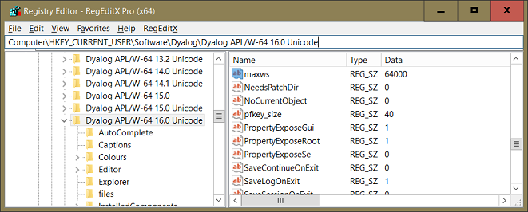

We cannot say it any better than the Wikipedia [1]:
The Registry is a hierarchical database that stores low-level settings for the Microsoft Windows operating system and for applications that opt to use the Registry. The kernel, device drivers, services, Security Accounts Manager (SAM), and user interface can all use the Registry. The Registry also allows access to counters for profiling system performance.
In simple terms, The Registry or Windows Registry contains information, settings, options, and other values for programs and hardware installed on all versions of Microsoft Windows operating systems. For example, when a program is installed, a new subkey containing settings like a program's location, its version, and how to start the program, are all added to the Windows Registry.
The Windows Registry is still the subject of heated discussion between programmers. Most hate it, some like it. Whatever your opinion, you cannot ignore it.
Originally Microsoft designed the database as the source for any configuration parameters, be it for the operating system, users or applications.
The Windows Registry will certainly remain the store for any OS-related information but, for applications, we have seen a comeback of the old-fashioned configuration file, be it as an INI, an XML or a JSON.
Even if you use configuration files to configure your own application, you must be able to read and occasionally also to write to the Windows Registry, if only to configure Dyalog APL to suit your needs.
The Windows Registry can be used by any application to store user-specific data. For example, if you want to save the current position and size of the main form of your application for each user so ou can restore both position and size next time the application is started≤ then the Windows Registry is the perfect place for these facts. The key suggests itself:
HKCU\Software\MyApplication\MainForm\Posn
HKCU\Software\MyApplication\MainForm\SizeNote that HKCU is a short cut for “HKey Current User”. There are others, and we will discuss them.
Microsoft’s terminology for the Registry varies strikingly from common usage. That is a rich source of confusion, but there is no avoiding it. Has to be mastered.
<!– Find the terminology strange? So do we, but it was invented by Microsoft and defines the standard.
So we use it too. That makes it easier to understand the Microsoft documentation and also to understand others discussing the Windows Registry. It also helps when you Google for Registry tweaks because the guys posting the solution to your problem are most likely using Microsoft speech as well.
What is strange about the terminology? Microsoft gives common words unusual meanings when it comes to the Windows Registry. –>
Here’s an example. This is the definition of the MAXWS parameter for Dyalog 64 bit Unicode version 16:

The full path is:
Computer\HKEY_CURRENT_USER\Software\Dyalog\Dyalog APL/W-64 16.0 Unicode\maxwsWe can omit Computer if it is the local machine, and we can shorten “HKEY_CURRENT_USER” as “HKCU”. That leaves us with:
HKCU\Software\Dyalog\Dyalog APL/W-64 16.0 Unicode\maxwsThat looks pretty much like a file path, doesn't it? So what about calling the different parts to the left of maxws folders?
Well, that might be logical, but Microsoft did not do that. Instead they call HKCU a key. The top-level parts are sometimes called root keys. The other parts except maxws are called subkeys; sometimes just keys.
So what's maxws? Well, it holds a value, so why not call it key? Oops, that's already taken. Maybe name or ID? Well, Microsoft calls it a value. That's a strange name because is has an associated value, in our example, the string '64000'.
To repeat: any given path to a particular piece of data in the Windows Registry consists of a key, one or more subkeys and a value that is associated with data:
root key\subkey\subkey\subkey\value = dataSome other things you should know:
- Keys and subkeys must not contain a backslash character (
\) but values (!) and data may. - Any subkey may have a default value. This is a piece of data associated with the subkey, not with a value.
- The Microsoft documentation clearly defines the word key for the top level only but later uses key and subkey interchangeably.
- According to the Microsoft documentation both keys and subkeys are case-insensitive. That suggests values are case-sensitive but actually they are case-insensitive too.
- Key names are not localised into other languages, although values may be.
These days the Windows Registry offers quite a range of datatypes, but most of the time you can manage with just these:
- REG_SZ
- The string datatype. APLers call this a text vector. Both
WinRegas well asWinRegSimplewrite text vectors as Unicode strings. - REG_DWORD
- A 32-bit number.
- REG_BINARY
- Binary data in any form.
- REG_MULTI_SZ
- For an APLer this is a vector of text vectors. This datatype was not available in the early days of the Windows Registry which is probably why it is not as widely used as you would expect.
- REG_QWORD
- A 64-bit number
There are more datatypes available, but they are less common.
A Windows Registry has just 5 root keys:
| Root key | Shortcut |
|---|---|
| HKEY_CLASSES_ROOT | HKCR |
| HKEY_CURRENT_USER | HKCU |
| HKEY_LOCAL_MACHINE | HKLM |
| HKEY_USERS | HKU |
| HKEY_CURRENT_CONFIG | HKCC |
From an application programmer’s point of view, the HKCU and the HKLM are the most important ones, and usually the only ones to write to.
This is what the MSDN has to say about 32-bit and 64-bit applications when it comes to the Windows Registry:
On 64-bit Windows, portions of the registry entries are stored separately for 32-bit application and 64-bit applications and mapped into separate logical registry views using the registry redirector and registry reflection, because the 64-bit version of an application may use different registry keys and values than the 32-bit version. There are also shared registry keys that are not redirected or reflected.
The parent of each 64-bit registry node is the Image-Specific Node or ISN. The registry redirector transparently directs an application's registry access to the appropriate ISN subnode. Redirection subnodes in the registry tree are created automatically by the WOW64 component using the name Wow6432Node. As a result, it is essential not to name any registry key you create Wow6432Node.
The KEY_WOW64_64KEY and KEY_WOW64_32KEY flags enable explicit access to the 64-bit registry view and the 32-bit view, respectively. For more information, see Accessing an Alternate Registry View.
Probably best to avoid 32-bit applications and just create 64-bit applications these days if you can. If for any reason you are forced to deliver 32-bit applications then read up the details in the MSDN [2].
The knowledge you have accumulated by now will probably suffice for the rest of your work as an application programmer. If you want to know all the details we recommend the Microsoft documentation [3].
The APLTree class WinRegSimple is a very simple class that offers just three methods:
ReadWriteDelete
It is also limited to the two datatypes REG_SZ and REG_DWORD.
The class uses the Windows Scripting Host (WSH) [4]. It is available on all Windows systems although it can be switched off by group policies, though we have never seen this in the wild.
If you want to read just a certain value then this – very small – class might suffice. For example, to read the aforementioned maxws value:
#.WinRegSimple.Read 'HKCU\Software\Dyalog\Dyalog APL/W-64 16.0 Unicode\maxws'
64000You can create a new value as well as a new key with Write:
#.WinRegSimple.Write 'HKCU\Software\Cookbooktests\MyValue' 1200

You can also delete a subkey or a value, but a subkey must be empty:
#.WinRegSimple.Delete 'HKCU\Software\Cookbooktests'
#.WinRegSimple.Read 'HKCU\Software\Cookbooktests'
#.WinRegSimple.Read'HKCU\Software\Cookbooktests\MyValue'
1200
#.WinRegSimple.Delete 'HKCU\Software\Cookbooktests\MyValue'
Unable to open registry key "HKCU\Software\Cookbooktests\MyValue" for reading.
#.WinRegSimple.Read'HKCU\Software\Cookbooktests\MyValue'
∧
#.WinRegSimple.Delete 'HKCU\Software\Cookbooktests\'To delete a subkey you must specify a trailing backslash.
You can also write the default value for a key. For that you must specify a trailing backslash as well. The same holds true for reading a default value:
#.WinRegSimple.Write 'HKCU\Software\Cookbooktests\' 'APL is great'
#.WinRegSimple.Read 'HKCU\Software\Cookbooktests\'
APL is great
Whether Write writes a REG_SZ or a REG_DWORD depends on the data: a text vector becomes “REG_SZ” while a 32-bit integer becomes “REG_DWORD” though booleans, as well as smaller integers, are converted to a 32-bit integer. Other datatypes are rejected.
If the WinRegSimple class does not suit your needs then have a look at the WinReg class. This class is much larger but has virtually no limitations at all.
To give you idea here the list of methods:
]adoc WinReg -summary
*** WinReg (Class) ***
Shared Fields:
ERROR_ACCESS_DENIED
...
REG_SZ
Shared Methods:
Close
CopyTree
DeleteSubKeyTree
DeleteSubKey
DeleteValue
DoesKeyExist
DoesValueExist
GetAllNamesAndValues
GetAllSubKeyNames
GetAllValueNames
GetAllValues
GetDyalogRegPath
GetErrorAsStringFrom
GetString
GetTreeWithValues
GetTree
GetTypeAsStringFrom
GetValue
History
KeyInfo
ListError
ListReg
OpenAndCreateKey
OpenKey
PutBinary
PutString
PutValue
Version
We will use both the WinReg class and the WinRegSimple class for two tasks:
- Add a specific folder holding user commands to all versions of Dyalog APL installed on the current machine.
- Add pieces of information to the caption definitions for all dialog boxes of all versions of Dyalog APL installed on the current machine.
The functions we develop along the way, as well as the variables we need, can be found in the workspace WinReg in the folder Z:\code\Workspaces\.
Let's assume we have a folder C:\MyUserCommands. We want to add this folder to the list of folders holding user commands. For that we must find out the subkeys of all versions of Dyalog installed on your machine:
∇ list←GetAllVersionsOfDyalog dummy
[1] ⍝ Returns a vector of text vectors with Registry subkeys for all
[2] ⍝ versions of Dyalog APL installed on the current machine.
[3] list←#.WinReg.GetAllSubKeyNames'HKCU\Software\Dyalog'
[4] ⍝ Get rid of "Installed components" etc:
[5] list←'Dyalog'{⍵/⍨((⍴⍺)↑[2]↑⍵)∧.=⍺}list
∇
↑GetAllVersionsOfDyalog ⍬
Dyalog APL/W 14.1 Unicode
Dyalog APL/W 15.0 Unicode
Dyalog APL/W 16.0 Unicode
Dyalog APL/W-64 13.2 Unicode
Dyalog APL/W-64 14.0 Unicode
Dyalog APL/W-64 14.1 Unicode
Dyalog APL/W-64 15.0
Dyalog APL/W-64 15.0 Unicode
Dyalog APL/W-64 16.0 UnicodeThat's step one. In the next step we need to write a function that adds a folder to the list of user command folders:
∇ {r}←path Add version;subkey;folders
r←⍬
subkey←'HKCU\Software\Dyalog\',version,'\SALT\CommandFolder'
'Subkey does not exist'⎕SIGNAL 11/⍨1≠#.WinReg.DoesValueExist subkey
folders←#.WinReg.GetString subkey
folders←';'{¯1↓¨⍵⊂⍨';'=¯1↓';',⍵}folders,';'
folders←(({(819⌶)⍵}¨folders)≢¨⊂(819⌶)path)/folders ⍝ drop doubles
folders←⊃{⍺,';',⍵}/folders,⊂path
#.WinReg.PutString subkey folders
∇Let's check the current status:
dyalogVersions←AllVersionsOfDyalog ''
⍪{#.WinReg.GetValue 'HKCU\Software\Dyalog\',⍵,'\SALT\CommandFolder'}¨dyalogVersions
C:\...\Dyalog APL 14.1 Unicode\SALT\Spice;C:\T\UserCommands\APLTeam\
C:\...\Dyalog APL 15.0 Unicode\SALT\Spice;C:\T\UserCommands\APLTeam\
C:\...\Dyalog APL 16.0 Unicode\SALT\Spice;C:\T\UserCommands\APLTeam\
...
'C:\MyUserCommands'∘Add¨dyalogVersions
⍪{#.WinReg.GetValue 'HKCU\Software\Dyalog\',⍵,'\SALT\CommandFolder'}¨dyalogVersions
C:\..\Dyalog APL 14.1 Unicode\SALT\Spice;C:\T\UserCommands\APLTeam\;C:\MyUserCommands
C:\...\Dyalog APL 15.0 Unicode\SALT\Spice;C:\T\UserCommands\APLTeam\;C:\MyUserCommands
C:\...\Dyalog APL 16.0 Unicode\SALT\Spice;C:\T\UserCommands\APLTeam\;C:\MyUserCommands
...
'C:\MyUserCommands'∘Add¨dyalogVersions
⍪{#.WinReg.GetValue 'HKCU\Software\Dyalog\',⍵,'\SALT\CommandFolder'}¨dyalogVersions
C:\...\Dyalog APL 14.1 Unicode\SALT\Spice;C:\T\UserCommands\APLTeam\;C:\MyUserCommands
C:\...\Dyalog APL 15.0 Unicode\SALT\Spice;C:\T\UserCommands\APLTeam\;C:\MyUserCommands
C:\...\Dyalog APL 16.0 Unicode\SALT\Spice;C:\T\UserCommands\APLTeam\;C:\MyUserCommandsAlthough we called Add twice, the folder C:\MyUserCommands appears only once. This is because we carefully removed it before adding it.
In Appendix 4 — The development environment we mention that if you run more than one instance of Dyalog in parallel then you want to be able to associate any dialog box to the instance that issued it. This can be achieved by adding certain pieces of information to certain entries in the Windows Registry. We talk about this subkey of, say, Dyalog APL/W-64 16.0 Unicode:
HKCU\Software\Dyalog\Dyalog APL/W-64 16.0 Unicode\CaptionsIf that subkey exists (after an installation it doesn't) then it is supposed to contain particular values defining the captions for all dialog boxes that might make an appearance when running an instance of Dyalog.
So to configure all these window captions you have to add the subkey Chapter and the required values in one way or another. This is a list of values honoured by version 16.0:
| Editor |
| Event_Viewer |
| ExitDialog |
| Explorer |
| FindReplace |
| MessageBox |
| Rebuild_Errors |
| Refactor |
| Session |
| Status |
| SysTray |
| WSSearch |
Although it is not a big deal to add these values with the Registry Editor we do not recommend this, if only because when the next version of Dyalog comes along then you have to do it again.
Let's suppose you have a variable captionValues which is a matrix with two columns:
[;1]is the name of a value[;2]is the definition of the caption
Here's what captionValues might look like:
⍴⎕←values
Editor {PID} {TITLE} {WSID}-{NSID} {Chars} {Ver_A}.{VER_B}.{VER_C} {BITS}
Event_Viewer {PID} {WSID} {PRODUCT}
ExitDialog {PID} {WSID} {PRODUCT}
Explorer {PID} {WSID} {PRODUCT}
FindReplace {PID} {WSID}-{SNSID} {Chars} {Ver_A}.{VER_B}.{VER_C} {BITS}
MessageBox {PID} {WSID} {PRODUCT}
Rebuild_Errors {PID} {WSID} {PRODUCT}
Refactor {PID} {WSID}-{SNSID} {Chars} {Ver_A}.{VER_B}.{VER_C} {BITS}
Session {PID} {WSID}-{NSID} {Chars} {Ver_A}.{VER_B}.{VER_C} {BITS}
Status {PID} {WSID} {PRODUCT}
SysTray {PID} {WSID}
WSSearch {PID} {WSID} {PRODUCT}
13 2Again, this variable can be copied from the workspace Z:\code\Workspaces\WinReg. We are going to write this data to the Windows Registry for all versions of Dyalog installed on the current machine.
For that we need a list with all versions of Dyalog installed on the current machine. We can use the function GetAllVersionsOfDyalog we developed earlier in this chapter:
dyalogVersions←GetAllVersionsOfDyalog ''Now we write a function that takes a version and the variable captionValues as argument and creates a subkey Captions with all the values. This time we use #.WinRegSimple.Write for it:
∇ {r}←values WriteCaptionValues version;rk
[1] r←⍬
[2] rk←'HKCU\Software\Dyalog\',version,'\Captions\'
[3] rk∘{#.WinRegSimple.Write(⍺,(1⊃⍵))(2⊃⍵)}¨↓values
∇We can now write captionValues to all versions:
captionValues∘WriteCaptionValues¨dyalogVersions
⍝ Let's check:
rk←'HKCU\Software\Dyalog\Dyalog APL/W-64 16.0 Unicode\Captions'
#.WinReg.GetTreeWithValues rk
0 HKCU\...\Captions\
1 HKCU\...\Editor {PID} {TITLE} {WSID}-{NSID} {Chars} {Ver_A}.{VER_B}.{VER_C} {BITS}
1 HKCU\...\Event_Viewer {PID} {WSID} {PRODUCT}
1 HKCU\...\ExitDialog {PID} {WSID} {PRODUCT}
1 HKCU\...\Explorer {PID} {WSID} {PRODUCT}
1 HKCU\...\FindReplace {PID} {WSID}-{SNSID} {Chars} {Ver_A}.{VER_B}.{VER_C} {BITS}
1 HKCU\...\MessageBox {PID} {WSID} {PRODUCT}
1 HKCU\...\Rebuild_Errors {PID} {WSID} {PRODUCT}
1 HKCU\...\Refactor {PID} {WSID}-{SNSID} {Chars} {Ver_A}.{VER_B}.{VER_C} {BITS}
1 HKCU\...\Session {PID} {WSID}-{NSID} {Chars} {Ver_A}.{VER_B}.{VER_C} {BITS}
1 HKCU\...\Status {PID} {WSID} {PRODUCT}
1 HKCU\...\SysTray {PID} {WSID}
1 HKCU\...\WSSearch {PID} {WSID} {PRODUCT}Footnotes
The Wikipedia on the Windows Registry:
https://en.wikipedia.org/wiki/Windows_RegistryThe MSDN on 32-bit and 64-bit applications and the Windows Registry:
https://msdn.microsoft.com/en-us/library/windows/desktop/ms724072(v=vs.85).aspxMicrosoft on the Windows Registry:
https://msdn.microsoft.com/en-us/library/windows/desktop/ms724946(v=vs.85).aspxThe Wikipedia on the Windows Scripting Host:
https://en.wikipedia.org/wiki/Windows_Script_Host